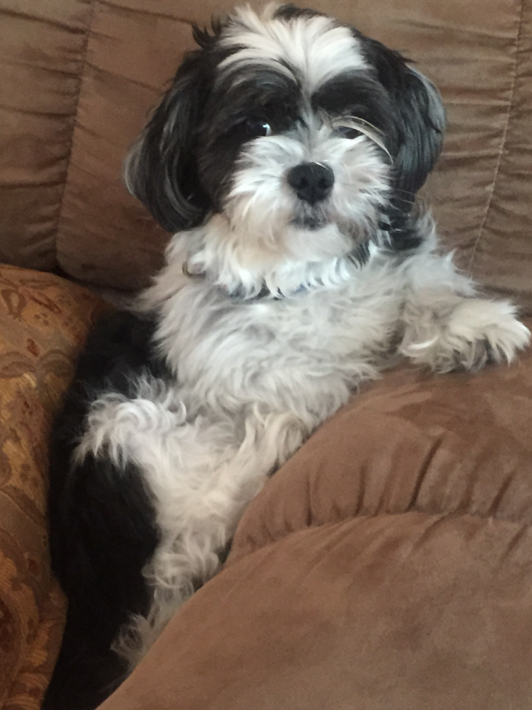

"Welcome to the Blog! My name's Inti and in this blog I hope to provide a place to discuss pet-related topics. Some topics I hope to discuss in the future include training, activities, and reviews."
My name is Inti Espejo. I am 20 years old and currently a junior at Virginia Tech majoring in Computer Science. I have a dog as seen above, named Oreo. He is a Maltese Shih Tzu crossbreed and he is currently 17 years old!